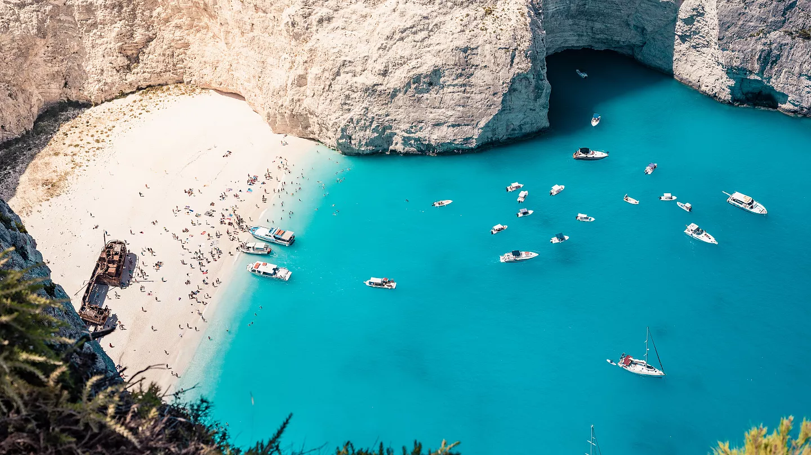

5 najpiękniejszych plaż na świecie
na których poczujesz się jak w raju

Jasiek, Mateusz
10 minut czytania
10 minut czytania
Ta plaża z nieskazitelnym, białym piaskiem krzemionkowym i turkusową wodą to prawdziwy kawałek nieba w Whitsundays.

Plaża ma około 7 kilometrów długości, co sprawia, że nawet w sezonie jest tu miejsce na spokojny wypoczynek bez tłumów.
Na północnym krańcu plaży znajduje się Hill Inlet, gdzie podczas przypływów i odpływów turkusowa woda miesza się z białym piaskiem, tworząc hipnotyzujące, wirujące wzory widoczne z góry.
Krystalicznie czyste wody, piękne zachody słońca i drobny piasek sprawiają, że jest to ulubione miejsce miłośników plażowania.
Grace Bay słynie z niewiarygodnie przejrzystej, spokojnej wody, chronionej przez pobliską rafę koralową, co czyni ją idealną do pływania i snorkelingu.
To największa i najbardziej rozwinięta turystycznie wyspa w archipelagu Turks and Caicos.

Granitowe głazy, rafy koralowe i różowy piasek – ta plaża jest tak fotogeniczna, jak to tylko możliwe.
Plażę zdobią gigantyczne, gładkie granitowe skały, które są jednymi z najczęściej fotografowanych na świecie.

W zależności od światła, biały piasek z domieszką drobnych cząstek koralowca przybiera delikatny różowy odcień.
Znana również jako Shipwreck Beach, ta kultowa zatoka otoczona jest klifami i można do niej dotrzeć tylko łodzią.
Główną atrakcją plaży jest prawdziwy wrak przemytniczego statku, który osiadł tam w 1980 roku.
Najsłynniejsze zdjęcia robione są z punktu widokowego nad klifem, ale uwaga: dostęp bywa niebezpieczny!
Plaża ta jest regularnie uznawana za jedną z najlepszych na świecie. Znajdziemy tu bujną przyrodę i wspaniałe miejsca do nurkowania.
Plaża znajduje się na wyspie Fernando de Noronha, wpisanej na listę UNESCO. Do plaży schodzi się po stromych metalowych schodach wśród klifów.
Zero barów, hoteli czy sklepów – przyroda w czystej postaci, plaża dla prawdziwych poszukiwaczy raju.